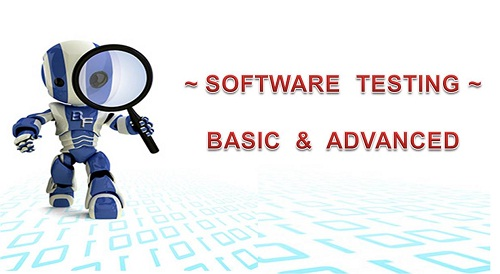
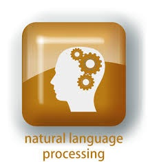

<html lang="en">

</html>

</html>

<head>
    <meta charset="UTF-8">
    <meta name="viewport" content="width=device-width, initial-scale=1.0">
    <link rel="stylesheet" href="styles/style10.css">
    <link rel="stylesheet" href="https://cdnjs.cloudflare.com/ajax/libs/font-awesome/6.6.0/css/all.min.css"
        integrity="sha512-Kc323vGBEqzTmouAECnVceyQqyqdsSiqLQISBL29aUW4U/M7pSPA/gEUZQqv1cwx4OnYxTxve5UMg5GT6L4JJg=="
        crossorigin="anonymous" referrerpolicy="no-referrer" />
    <title>Document</title>
</head>

<body>
    <div class="university">
        <h1>Các hướng nghiên cứu</h1>
        <div class="date">
            <i class="fa-solid fa-calendar-days"></i>
            02/08/2017 08:04
        </div>
        <div class="content-item">
            <h2>Mục tiêu và định hướng chiến lược</h2>
            <p>Các định hướng nghiên cứu của Khoa CNTT tập trung vào những nội dung sau: software testing và software
                testability, speech processing, image processing & computer vision, embedded Systems, processing of
                natural languages, advanced database & information system, geometric modeling, grid computing và
                parallel processing. Mục tiêu của khoa là duy trì và phát triển nghiên cứu ở đẳng cấp quốc tế và hợp
                tác thường xuyên với các cơ sở nghiên cứu ở trong và ngoài nước.</p>
            <div class="image">
                
            </div>
            
            <h2>Các hướng nghiên cứu chính</h2>
            <h2>Software testing và software testability</h2>
            <p>Kiểm tra được tiến hành để cung cấp cho các bên liên quan thông tin về chất lượng của sản phẩm hoặc dịch
                vụ được kiểm thử. Một số lĩnh vực liên quan: tìm ra lỗi và thiếu sót nhằm sửa chữa những lỗi đó,
                mutation testing, regression testing, interactive application testing.</p>
            <p>- Hợp tác với CTSYS team in Grenoble, France</p>
            <p>- Dự án Lotus</p>
            <p>- 2010-2012</p>

            <p>- Funded by French & Vietnamese governments</p>

            <p>- Analyze testability of reactive software</p>

            <p>+ Data-flow designs</p>

            <p>+ Finite state machines</p>

            <p>Applied to SCADE, SIMULINK and SCICOS environments</p>
            <div class="image">
                
            </div>
            

            <h2>Image processing & computer vision</h2>
            <p>Mục tiêu là tạo ra các hệ thống thông minh với các khả năng như cảm nhận, và suy nghĩ thông quahình ảnh
                thu nhận từ các thiết bị như camera/sensors. Một số lĩnh vực liên quan tới xử lý ảnh bao gồm image
                processing : low to high level, face và facial expression recognition, activity recognition: Fall,
                Walk,…, smart camera system.</p>
            <p>- Dự án Video surveillance</p>

            <p>+ Video surveillance of Medication Intake</p>

            <p>+ Video surveillance of Fall Detection</p>

            <p>+ Hợp tác với DIRO in Montreal, Canada; with I&M in Marseille, France.</p>

            <p>+ Multi-view image segmentation</p>

            <p>- Hợp tác với Associate Professor Cai Jianfei’s group, School of Computer Engineering, Nanyang
                Technological University, Singapore</p>

            <p>- Image processing on FPGA</p>

            <p>+ Hợp tác với The Graduate School of Systems and Information Engineering, University of Tsukuba, Japan
            </p>
            <div class="image">
                
            </div>
            

            <h2>Processing of natural languages</h2>
            <p>Một số lĩnh vực liên quan: machine Translation (MT) & Computer-Aided Translation (CAT), natural
                Language Processing (NLP) & associated platforms, linguistic Data Resources Collection & Construction,
                information Systems Localization, automatic Recognition of Speech, Speakers, Sounds and Dialect.</p>
            <p>- Hợp tác với GETALP, France</p>
            <p>+ ERIM: A Network Enviroment for Multimodal Interpretation</p>

            <p>+ EOLSS-UNL: Translation of an Online Encyclopedia Using</p>

            <p>+ Classical MT and Deconversion from UNL</p>

            <p>+ TRANSAT: Evaluation of Translation Corpora</p>

            <p>+ FEV: Multilingual dictionary: French-Vietnamese via English</p>

            <p>- Hợp tác với NII, Japan</p>

            <p>+ UNL (Universal Networking Language)</p>

            <p>+ DSR (Digital Silk Road)</p>
            <div class="image">
                
            </div>
            

            <h2>Advanced database & information system</h2>
            <p>Một số lĩnh vực liên quan: Fuzzy Relation DataBase, Object-Oriented DataBase, Data Warehouse, Data
                mining</p>
            <div class="image">
                
            </div>
            
            <h2>Computer Networking & Parallel processing</h2>
            <p>Mộ số lĩnh vực liên quan:Computer networks, Distributed systems, Parallel processing, IDS Systems.</p>
            <div class="image">
                
            </div>
            
        </div>


    </div>
</body>

</html>